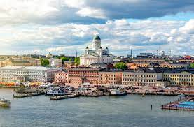

Helsinki on suomen Pääkaupunki jossa asuu noin 700 000 ihmistä, joka tekee Helsingistä suomen suurimman kaupungin. Helsingin rakennusten ikä näkyy rakennusten arkkitehtuusrissa, joka on saanut vaikutteita entisen Neuvostoliiton ajoilta.
Helsingin luonto on pääosin vesistö painoitteista, sillä Helsinki sijaitsee Suomenlahden rannikolla. Helsingin luonnon maisemaan kuuluu myös hyvin hoidettuja metsä alueita, joista suurin osa toimii puistoina kaupunkilaisille ja turisteille. Helsingin reunamilla luonto on pääosin metsää, joka on suurimakseen alankoa. Helsingin luonto sopii erittäin hyvin kalastajalle, sillä Helsingin edustalla on erinomaisia kalapaikkoja.
